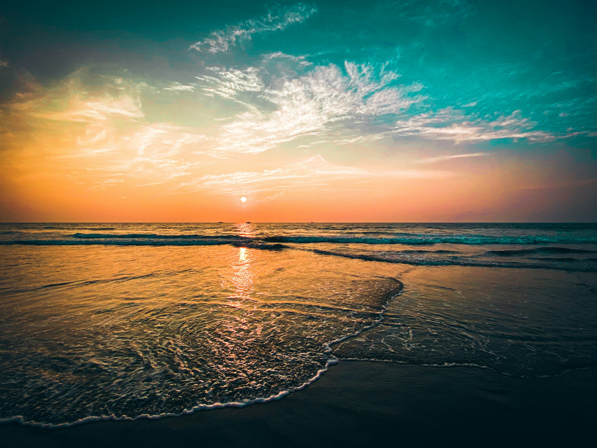
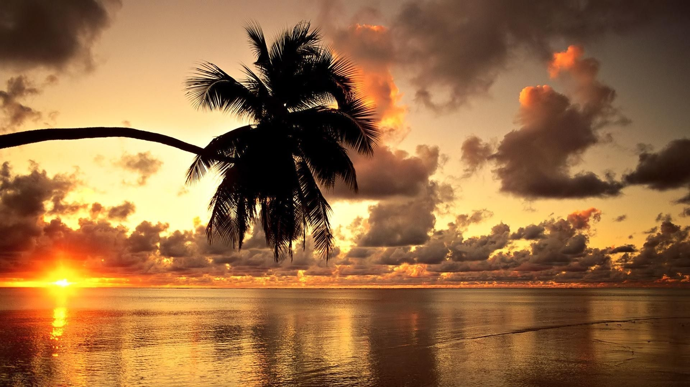
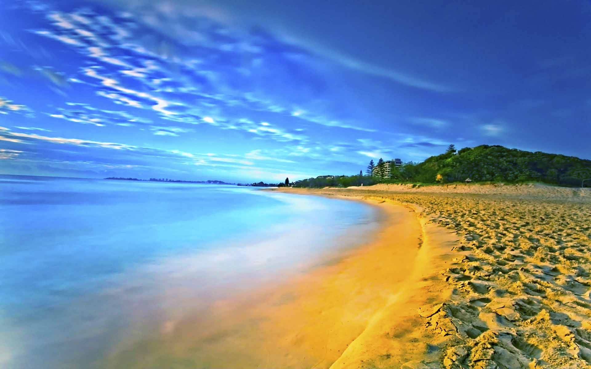
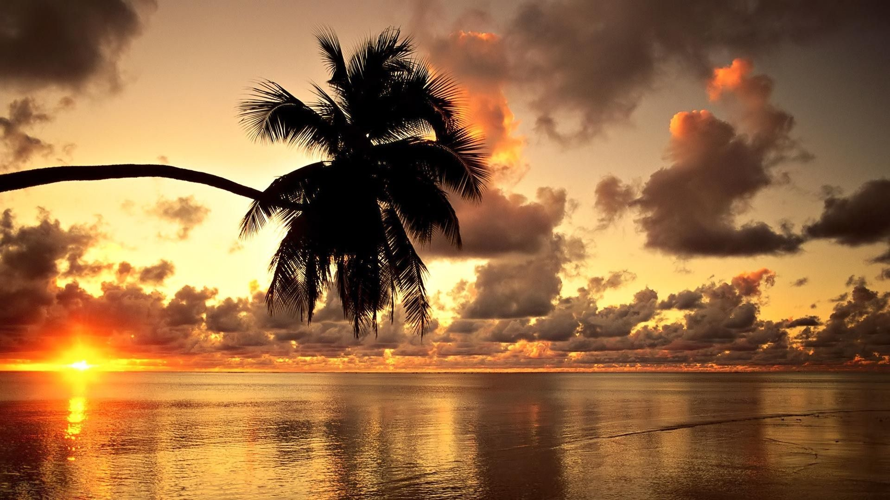
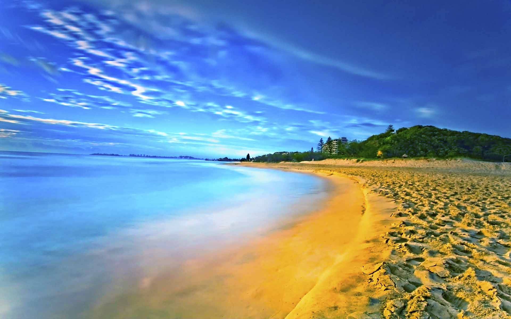
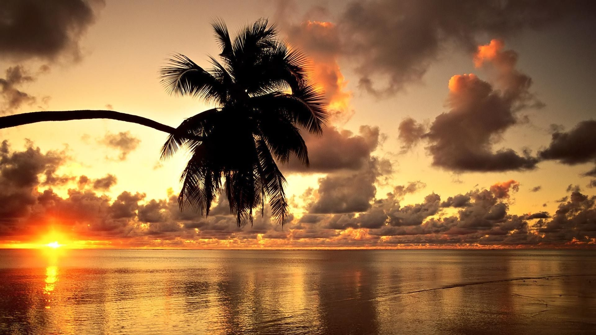
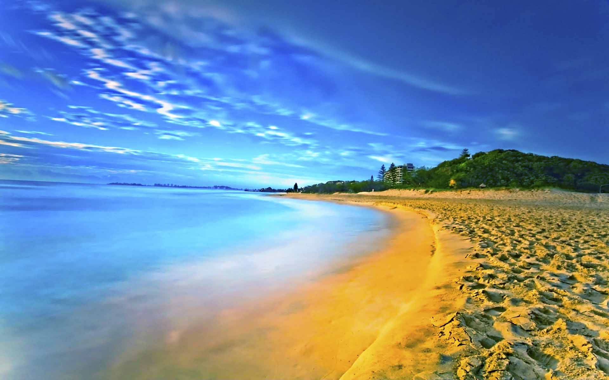

Introduction
Goa, located on the western coast of India, is renowned for its picturesque beaches, vibrant nightlife, and rich cultural heritage. Once a Portuguese colony, Goa seamlessly blends Indian traditions with European influences, making it a unique travel destination.
Popular Attractions
- Baga Beach: A hotspot for water sports, nightlife, and beach parties.
- Old Goa: Home to UNESCO World Heritage Sites like the Basilica of Bom Jesus and Se Cathedral.
- Dudhsagar Waterfalls: A stunning natural wonder surrounded by lush forests.
- Fort Aguada: A well-preserved 17th-century Portuguese fort offering panoramic views of the Arabian Sea.
Culture and Cuisine
Goa's culture is a blend of Indian and Portuguese traditions, reflected in its architecture, festivals, and food. The locals are warm and welcoming, and the state is known for its relaxed vibe.
- Festivals: Goa Carnival, Shigmo, and Christmas celebrations.
- Cuisine: Famous for seafood, vindaloo, and bebinca (a layered dessert).
Image Gallery

 





Travel Tips
- Best time to visit: November to February for pleasant weather.
- Carry sunscreen and beachwear for daytime activities.
- Rent a scooter or car for easy transportation.
- Respect local customs and dress modestly when visiting religious sites.